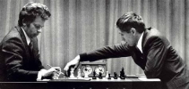
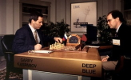
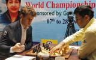

Né en Asie au VI siècle le jeu se propageât d'abord au moyen orient puis en Europe, se suivit l'ajout des règles modernes dans la période de la Renaissance. Il y a aujourd'hui de nombreux tournois et le champion du monde actuelle est Magnus Carlsen
| 1972 | Pour la première fois de l'histoire
Bobby Fischer bat le champion du monde Russe Boris Spassky Cette partie est considérée comme la partie du XX siècles |
 |
| 1997 | Pour la première fois de l'histoire
un ordinateur nommée Deep Blue bat le champion du monde d'échec Garry Kasparov.
Montrant ainsi les progès de l'IA à la veille du XXI siècles Les algorithmes d'IA d'échec étant moins couteux que d'autre jeux comme le go ou ce fut seulement en 2016 que le champion du monde fut vaincut par un ordinateur |
 |
| 2013 | Magnus Carlsen bat Viswanathan Anand faisant de lui le nouveaux et actuel champion du monde. |  |